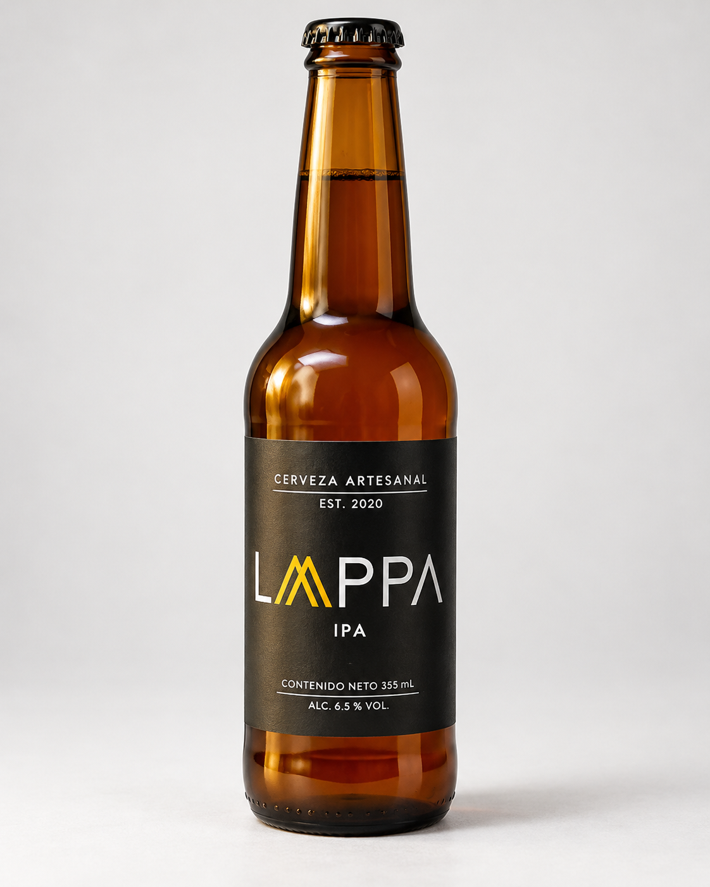
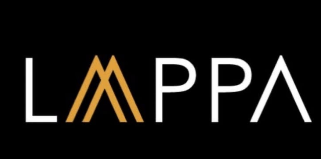
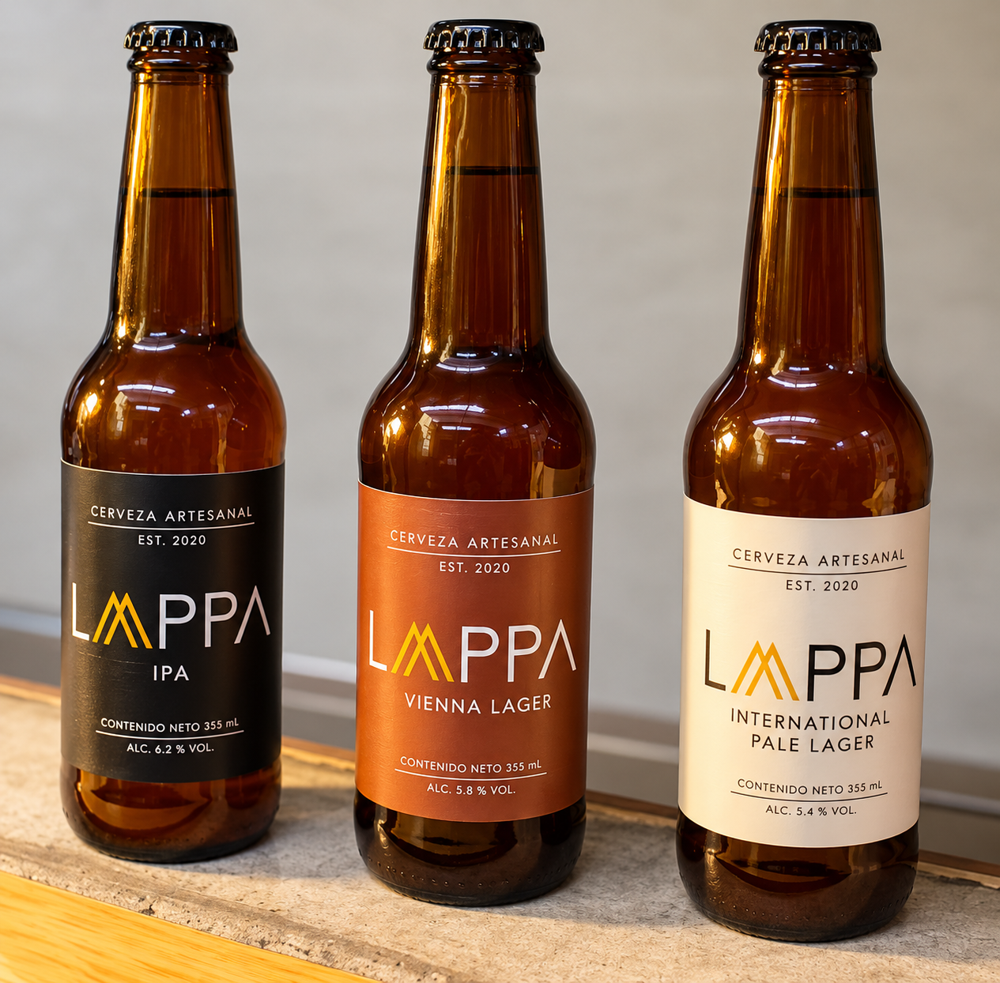
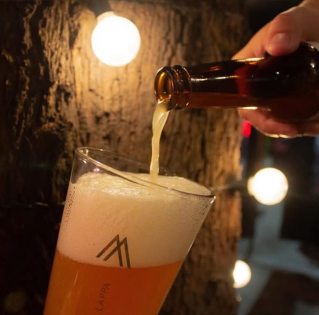

LAPPAAROMÁTICA

CARÁCTER LUPULADO
IPA
Aromática, lupulada y equilibrada. Una cerveza con personalidad que sigue siendo fácil de disfrutar.

ESCRÍBENOSCERVEZA ARTESANAL DESDE IZTAPALAPA
Hacemos cervezas con carácter, balance y alta tomabilidad. Recetas claras y honestas, sin pretensiones. Porque lo que importa está adentro.

TRES ESTILOS · UNA MISMA ESENCIANUESTRO ORIGEN
Lappa es una nanocervecería nacida en Iztapalapa, Ciudad de México, con la idea de hacer cervezas con carácter, balance y alta tomabilidad. Buscamos recetas claras, honestas y sin pretensiones: cervezas que tengan personalidad, pero que sigan siendo fáciles de disfrutar.
Nuestra línea parte de estilos que nos gustan beber y reinterpretar a nuestra manera. Hoy Lappa se mueve entre una IPA aromática y equilibrada, una Vienna Lager maltosa y tostada, y una International Pale Lager limpia, refrescante y de perfil ligero. De forma ocasional también desarrollamos producciones especiales y estilos de temporada.
Más que seguir tendencias, buscamos construir una identidad propia desde el sabor, el origen y la constancia. Lappa nace en Iztapalapa y desde ahí queremos hacer cerveza que pueda hablar por sí sola.
What matters is inside.
NUESTROS ESTILOS
En Lappa hacemos cervezas con identidad, equilibrio y alta tomabilidad. Partimos de estilos que disfrutamos beber y los llevamos a nuestro propio lenguaje, buscando perfiles claros, bien definidos y sin complicaciones innecesarias.
Nuestra línea reúne una IPA aromática y lupulada, una Vienna Lager maltosa y equilibrada, y una International Pale Lager limpia y refrescante. Cada una distinta, pero todas bajo la misma idea: What matters is inside.

CARÁCTER LUPULADO
Aromática, lupulada y equilibrada. Una cerveza con personalidad que sigue siendo fácil de disfrutar.

TOSTADA Y BALANCEADA
Maltosa, tostada y equilibrada. Un perfil redondo, agradable y muy disfrutable.

LIGERA Y LIMPIA
Limpia, ligera y refrescante. Un estilo de perfil directo que invita a pedir otra.
NUESTRA FILOSOFÍA
En Lappa creemos que una buena cerveza no necesita complicarse para tener carácter. Buscamos equilibrio, claridad en los sabores y una alta tomabilidad, cuidando cada receta para que los ingredientes se expresen sin competir entre sí.
Trabajamos cada estilo con una idea sencilla: hacer cervezas que tengan identidad, que sean fáciles de disfrutar y que den ganas de volver a pedir otra.

HECHA PARA DISFRUTAR.ENCUÉNTRANOS
Lappa nace y se hace en Iztapalapa, Ciudad de México.
Si quieres conocer más sobre nuestras cervezas, hacer un pedido, proponer una colaboración o saber dónde encontrarnos, escríbenos.